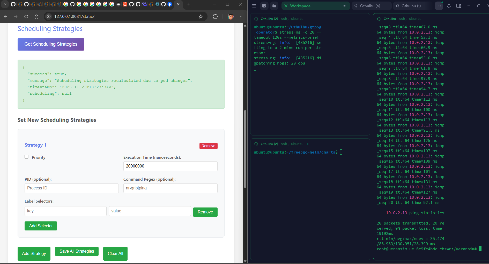

Implementing GTP-driven Automatic Scheduling Optimization with eBPF-based Scheduler
Note
Author: Meng-Han, Hsieh
Date: 2025/11/26
Abstract
This article demonstrates how to use eBPF (Extended Berkeley Packet Filter) to trace GTP packet processing in the kernel (via gtp5g-tracer), and combine it with Gthulhu — a Linux eBPF-based Scheduler (sched_ext) — to automatically adjust scheduling strategies for end-to-end UE (User Equipment) latency optimization.
Key achievements delivered in this work:
- Automatically identify gNodeB, UE related process ID
- Dynamically adjust related process priority and CPU time slices
- Reduce UE ping latency
Background
Performance Challenges in 5G UPF
In 5G networks, the UPF handles all user plane traffic, including tasks like GTP encapsulation/decapsulation and routing. UPF usually faces several performance challenges:
-
Multi-process CPU Competition:
- gNodeB processes (e.g. nr-gnb)
- UE simulators (e.g. nr-ue) generate test traffic
- GTP5G kernel module processes packets
- Other system services compete for CPU resources
-
Limitations of Linux CFS Scheduler:
- CFS (Completely Fair Scheduler) pursues fairness
- Lacks application-level awareness — can't automatically prioritize critical 5GC processes based on traffic
-
Manual Optimization Difficulties:
- PIDs change dynamically (container/process restarts)
- Requires continuous monitoring and adjustment
Solution
Combining eBPF observability + eBPF-based scheduler (sched_ext) programmability to build an automated process scheduling optimization system. Instead of modifying network traffic directly, I trace the gtp5g module to identify nr-ue and nr-gnb related processes and provide them higher CPU priority during high system load:
%%{init: { 'themeVariables': { 'fontSize': '24px', 'fontFamily': 'Inter, Arial, sans-serif' } } }%%
flowchart LR
subgraph Host[5G Core Host]
direction LR
UE["UE"] --> gNodeB["gNodeB"] --> UPF["UPF (GTP5G)"] --> Internet["Internet"]
end
subgraph Tracing["Kernel eBPF Tracing"]
direction TB
gtp5g_tracer["gtp5g-tracer"]
trace_pipe["trace_pipe"]
gtp5g_tracer --> trace_pipe
end
subgraph Operator["User-space Operator"]
direction TB
operator["gtp5g_operator\n(Go service)\nParse & Detect"]
operator --> gthulhu_api["Gthulhu API"]
gthulhu_api_note["K8s service - Strategy Management"]
gthulhu_api -.-> gthulhu_api_note
end
gtp5g_tracer -->|events| operator
gthulhu_api -->|Update Strategies| gthulhu_sched["Gthulhu Scheduler\n(sched_ext, eBPF-based)"]
gthulhu_sched -->|Apply| UPF
classDef component fill:#f8f9fa,stroke:#333,stroke-width:1px
class gtp5g_tracer,trace_pipe,operator,gthulhu_api,gthulhu_sched component
%% end mermaidArchitecture
System Components
1. gtp5g-tracer (eBPF Tracer)
Function: Trace critical functions in GTP5G kernel module
Implementation:
// gtp5g_tracer_kern.c
SEC("fentry/gtp5g_encap_recv")
int BPF_PROG(gtp5g_encap_recv_entry, struct sk_buff *skb,
struct net_device *dev) {
u32 pid = bpf_get_current_pid_tgid() >> 32;
u32 tgid = bpf_get_current_pid_tgid();
bpf_printk("fentry/gtp5g_encap_recv: PID=%d, TGID=%d", pid, tgid);
return 0;
}
SEC("fexit/gtp5g_encap_recv")
int BPF_PROG(gtp5g_encap_recv_exit, struct sk_buff *skb,
struct net_device *dev, int ret) {
bpf_printk("fexit/gtp5g_encap_recv: ret=%d", ret);
return 0;
}
Traced Functions:
gtp5g_encap_recv(): GTP encapsulation receivegtp5g_handle_skb_ipv4(): IPv4 packet handlinggtp5g_xmit_skb_ipv4(): IPv4 packet transmission
Output (/sys/kernel/debug/tracing/trace_pipe):
nr-gnb-365189 [003] d..31 21039.948599: bpf_trace_printk: fentry/gtp5g_encap_recv: PID=365189, TGID=365162
nr-ue-365012 [004] d..31 22353.878390: bpf_trace_printk: stop: pid=365012 (nr-ue) cpu=4
2. gtp5g_operator (Go Service)
Function: Parse trace_pipe, identify critical process IDs, and send scheduling strategies
Core Modules:
2.1 Trace Parser (pkg/parser/trace_parser.go)
type TraceParser struct {
nrGnbRegex *regexp.Regexp
nrUeRegex *regexp.Regexp
}
func (p *TraceParser) ParsePIDFromLine(line string) (int, bool) {
// Priority matching:
// 1. TGID= (thread group ID)
// 2. nr-gnb-<PID> / nr-ue-<PID>
// 3. pid=<num> (procname)
// 4. PID= field
}
2.2 JWT Auth Client (pkg/auth/client.go)
type Client struct {
token string
tokenExpiry time.Time
mu sync.RWMutex
}
// Automatic token management:
// - Acquire on first request
// - Auto-refresh 5 minutes before expiry
// - Thread-safe
2.3 API Client (pkg/api/client.go)
type SchedulingStrategy struct {
PID int `json:"pid"`
Priority bool `json:"priority"`
ExecutionTime uint64 `json:"execution_time"` // nanoseconds
}
func (c *Client) SendStrategies(ctx context.Context,
pids map[int]bool,
priority bool,
executionTime uint64)
Workflow:
1. tail -f /sys/kernel/debug/tracing/trace_pipe
2. Regex matching to extract PIDs (nr-gnb, nr-ue)
3. POST to Gthulhu API every second
4. Periodically get JWT token authentication
3. Gthulhu Scheduler (eBPF-based Scheduler / sched_ext)
Function: Programmable scheduler based on Linux sched_ext
Key Features:
- Receive strategy updates via API
- Dynamically adjust process priority
- Custom CPU time slice allocation
Strategy Parameters:
{
"strategies": [
{
"pid": 365162, // gNodeB main process
"priority": true, // Boost priority
"execution_time": 20000000 // 20ms time slice
}
]
}
Data Flow
To clearly demonstrate the data flow, I divide the process into three phases: Traffic Tracing, Analysis & Decision, and Scheduling Optimization.
%%{init: { 'themeVariables': { 'fontSize': '12px', 'fontFamily': 'Inter, Arial, sans-serif' } } }%%
flowchart TD
subgraph Phase1["1. Traffic Tracing (Kernel Space)"]
UE[UE Device] -->|GTP Packets| GTP[GTP5G Module]
GTP -->|fentry Trigger| Tracer[eBPF Tracer]
Tracer -->|Write Event| Pipe[trace_pipe]
end
subgraph Phase2["2. Analysis & Decision (User Space)"]
Pipe -->|Read| Operator[gtp5g_operator]
Operator -->|Parse PID| Operator
Operator -->|HTTP POST| API[Gthulhu API]
end
subgraph Phase3["3. Scheduling Optimization (Scheduler)"]
API -->|Update Map| Scheduler[Gthulhu Scheduler]
Scheduler -->|Boost Priority| GTP
end
classDef phase fill:#f9f9f9,stroke:#333,stroke-width:1px;
class Phase1,Phase2,Phase3 phase;Process Detail:
- Traffic Generation: UE sends packets, processed by the
GTP5G Modulein the Kernel. - Event Capture:
gtp5g-tracerintercepts key functions via eBPF hooks and writes PID information totrace_pipe. - Data Analysis:
gtp5g_operatorreads the pipe in real-time, filtering for key processes (nr-gnb/nr-ue). - Strategy Dispatch: The Operator sends the identified PIDs to the
Gthulhu API. - Execution:
Gthulhu Schedulerreceives the strategy and immediately adjusts the CPU priority and time slice for that PID.
Implementation Details
Environment Setup
System Requirements
- OS: Ubuntu 25.04 (kernel 6.12+)
- Kubernetes: microk8s or other K8s distributions
- free5GC: free5GC-helm v4.2.0
- Go: v1.24.2
- gtp5g: v0.9.15
- gtp5g-tracer: x
Step 1: gtp5g-tracer (build & run)
1. Make gtp5g functions visible for fentry/fexit:
If functions are declared static inline the symbol may not be visible to the tracer. Convert to a visible symbol where needed (example):
// gtp5g/src/gtpu/gtpu.c
- static inline int gtp5g_encap_recv(struct sk_buff *skb, struct net_device *dev)
+ __visible noinline int gtp5g_encap_recv(struct sk_buff *skb, struct net_device *dev)
{
// ... function body
}
2. Build & run the tracer
cp /sys/kernel/btf/vmlinux /usr/lib/modules/$(uname -r)/build/
cd <GTP5G>
make clean && make
sudo make install
cd <GTP5G-TRACER>
make dep
make
3. Quick verification (development, should have ue traffic):
sudo cat /sys/kernel/debug/tracing/trace_pipe | grep gtp5g
# example output:
# nr-gnb-365189 ... bpf_trace_printk: fentry/gtp5g_encap_recv: PID=365189, TGID=365162
# nr-ue-365012 ... bpf_trace_printk: stop: pid=365012 (nr-ue) cpu=4
Step 2: Build Gthulhu
-
Gthulhu (API + Scheduler): Deploying Gthulhu with Kubernetes
-
gtp5g_operator: build the operator binary and make sure it can authenticate against the Gthulhu API
cd ~/Gthulhu/gtp5g_operator
go build -o gtp5g_operator
The operator expects configuration for the API endpoint and the Kubernetes JWT public key; see ./start_operator.sh for example environment variables.
Deployment Guide
Host (Ubuntu 25.04)
├── gtp5g-tracer (running in background)
│ └── Output to /sys/kernel/debug/tracing/trace_pipe
│
├── Kubernetes Cluster (microk8s)
│ ├── gthulhu-api (Pod)
│ │ ├── :8080 (API Server)
│ │ └── /app/jwt_public_key.pem
│ │
│ └── gthulhu-scheduler (Pod)
│ └── eBPF-based Scheduler (sched_ext)
│
└── gtp5g_operator (running on host)
├── Read trace_pipe
├── Port-forward → :8081 → K8s :8080
└── Send strategies to Gthulhu API
Startup Sequence
-
Start free5GC-helm and UERANSIM
# Install free5GC charts cd free5gc-helm/charts helm install -n free5gc free5gc-helm ./free5gc/ #Install UERANSIM chart cd free5gc-helm/charts helm install -n free5gc ueransim ./ueransim/ -
Start gtp5g-tracer
cd ~/gtp5g-tracer sudo ./main -
Start Gthulhu (K8s)
cd Gthulhu/chart helm install gthulhu gthulhu -
Setup Port-Forward
POD_NAME=gthulhu-api-xxxxx sudo kubectl port-forward $POD_NAME 8081:8080 -
Start gtp5g_operator
cd ~/Gthulhu/gtp5g_operator/ sudo go run main.go
Performance Testing
Test Methodology
Baseline (Unoptimized)
- Stop gtp5g_operator
- Clear Gthulhu strategies
- UE ping test (Run a short host CPU stress, e.g.
stress-ng -c 20 --timeout 120s --metrics-brief):
# Inside UE POD
ping -I uesimtun0 N6_IP -c 20
Optimized
- Start gtp5g_operator
- Confirm strategies are applied
- UE ping test (same command, same CPU stress)
Test Results
| Metric | Baseline | Optimized | Improvement |
|---|---|---|---|
| Avg Latency | 88.98 ms | 2.079 ms | 97.66% |
| Min Latency | 35.47 ms | 0.679 ms | 98.08% |
| Max Latency | 130.95 ms | 8.45 ms | 93.55% |

Figure 1: Baseline - without gtp5g-operator

Figure 2: Optimized - automatic apply schduling strategies
Conclusion
Combining kernel-level eBPF tracing of gtp5g with an eBPF-based scheduler (Gthulhu) provides an efficient, non-invasive way to detect and prioritize critical 5GC processes — Reducing substantial UE latency under CPU contention. While this approach is promising, it requires BTF/function visibility and safe, well-tested strategies to avoid negative trade-offs.
References
About
Hello! I'm Meng-Han Hsieh, and I've recently started exploring 5G technology and engaging with the free5GC community. I hope you find this blog post useful, and don't hesitate to reach out if you have recommendations for improvement.
Connect with Me
- GitHub: Meng-Han, Hsieh